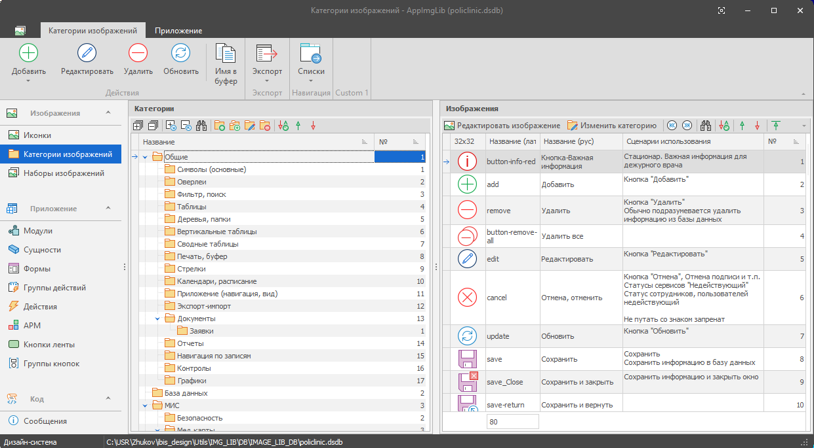
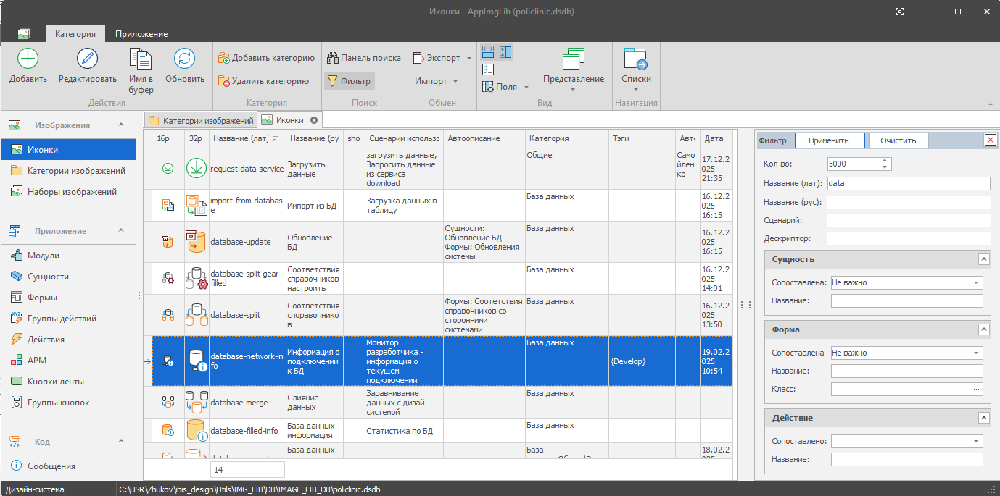

Хранение изображений
Хранение значков и других изображений в библиотеке.
IMG_LIB — настольный редактор библиотеки изображений для Windows (Win32). Полезен при разработке приложений с большим количеством значков (иконок): помогает понимать их смысл, назначение и место использования.
Библиотека хранится в базе данных SQLite.
Хранение значков и других изображений в библиотеке.
Быстрый поиск изображений и навигация по категориям.
Ведение описаний метафор и сценариев использования изображений.
Учёт связей изображений с сущностями, формами и кнопками.
Ведение описаний использования оверлеев — дополнительных значков поверх основных.
Предварительная оценка внешнего вида интерфейса во встроенном дизайнере ленты.


Windows (Win32)